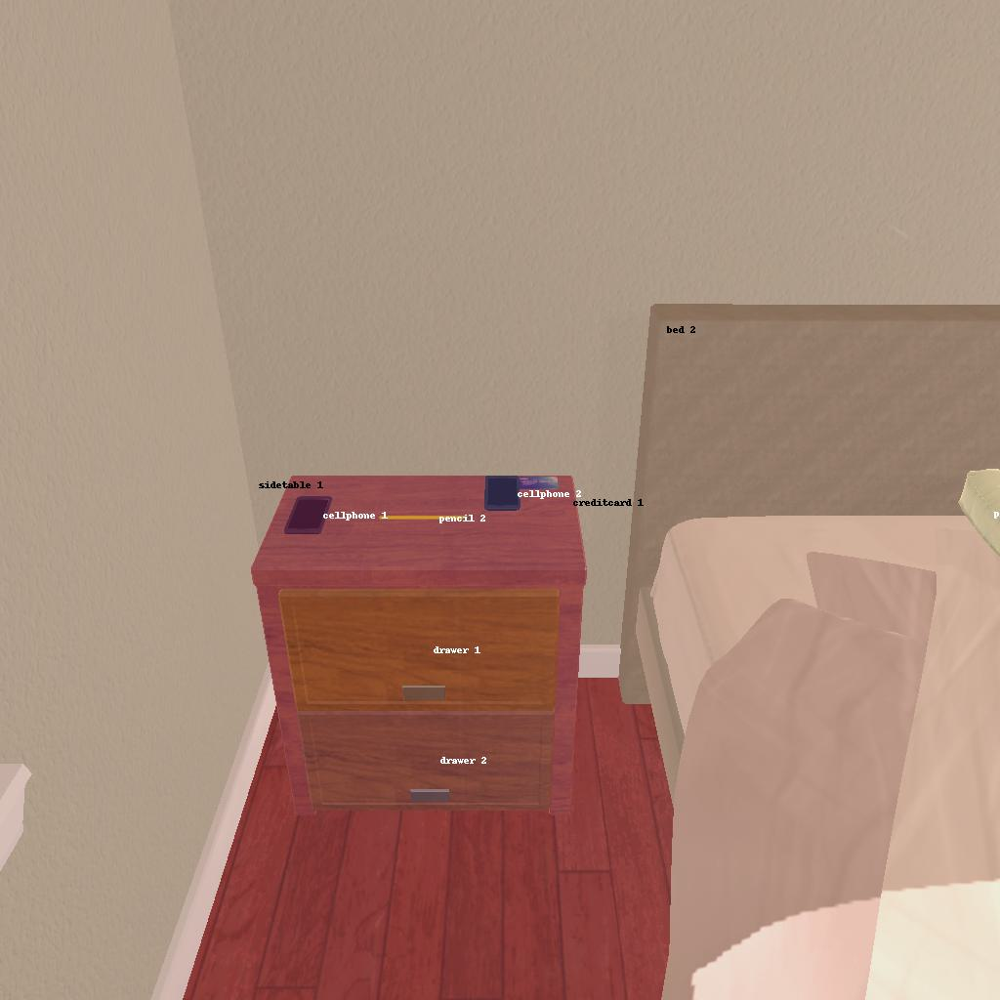

---------------------------------------------------------task: 6---------------------------------------------------------
--------------------------------------------------------------------------------------------------------------------------------------------------------------------
--------------------------------------------------------------------------------------------------------------------------------------------------------------------
Step:--------------------------------------------------------------------------3-------------------------------------------------------------------------------
----------------------------------------
VLM Prompt:
Image1:
**Instruction**
1. Analyze the provided image to identify all visible household objects, focusing on those relevant to the task description "put a cd in safe."
2. Use the analysis of the image and the task hint "The agent must find an object of the desired type, pick it up, find the correct location to place it, and put it down there." to answer the question: what is the most reasonable action in the choices for the task description "put a cd in safe"?
4. Decide and write the answer using the template: The answer is: (i): , where i is the real number. If there is no desired object in the image, search every place based on **Initial Observation** to find the object. And if no one is exactly correct, choose a similar answer.
**Initial Observation**
You are in the middle of a room. Looking quickly around you, you can see bed (1-2), dresser (1), sidetable (1-2), drawer (1-11), desk (1), garbagecan (1), safe (1)
**Answer Choices**
(1): go to bed 1
(2): go to dresser 1
(3): go to bed 2
(4): go to sidetable 1
(5): go to drawer 2
(6): go to sidetable 2
(7): go to drawer 3
(8): go to drawer 4
(9): go to garbagecan 1
(10): go to drawer 5
(11): go to drawer 6
(12): go to drawer 7
(13): go to drawer 8
(14): go to drawer 9
(15): go to drawer 10
(16): go to drawer 11
(17): go to safe 1
(18): open drawer 1
(19): close drawer 1
(20): examine drawer 1
**Answer**
Let's think step by step by following the instructions.
----------------------------------------
----------------------------------------
Original Response:
Firstly, there is no CD visible in the provided image. However, we are in a room with multiple drawers, which are common places to store a CD. Since the task is to "put a cd in safe," the first reasonable action would be to find a CD. We should search in the drawers as they are likely places for a CD to be stored. The image shows drawer 1 and drawer 2 of sidetable 1, but we don't see the contents of the drawers. We should start by examining or opening a drawer to find a CD.
The most reasonable action from the choices provided would be to open a drawer since examining it may not reveal if there is a CD inside without opening it. The drawer 1 is the closest and most visible in the image, so it's logical to start there.
The answer is: (18): open drawer 1.
----------------------------------------
----------------------------------------
>>> Refine Original VLM Response and Get Pure Action: open drawer 1
----------------------------------------
-----------------------------------------------------------------
Running time: 8.116737365722656 seconds
Total Money: 1.6769800000000006
-----------------------------------------------------------------
-----------------------------------------------------------------
Text Observation:You open the drawer 1. The drawer 1 is open. In it, you see a pillow 1, a cellphone 1, a cellphone 2, a creditcard 1, and a pencil 2.
-----------------------------------------------------------------
UNSUCCEED